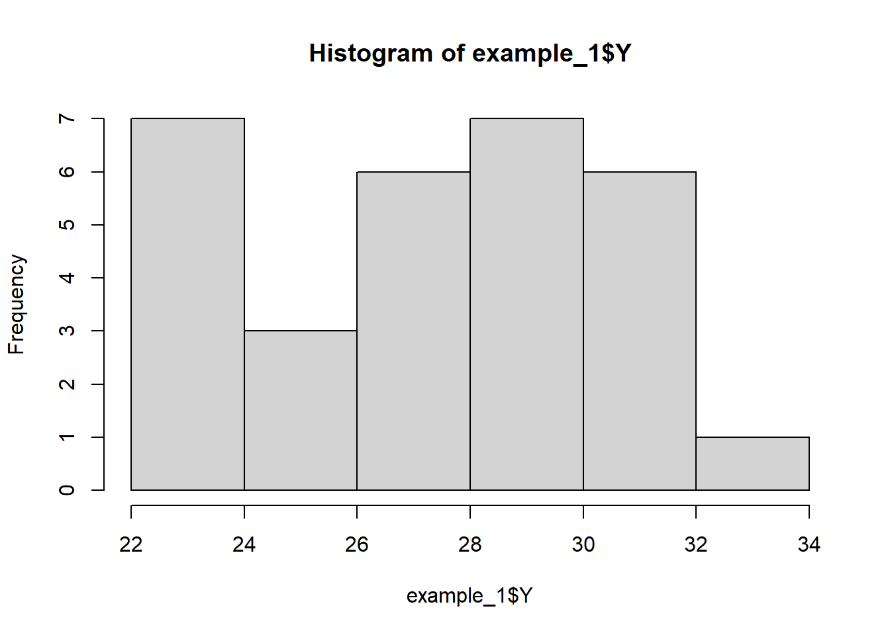

| Block | 4 | Block | 4 | ||
| Treatment | 5 | Treatment | 5 | ||
| Unit(block) | 25 | Unit(block)|Trt* | 25-5=20 | ||
| Total | 29 | Total | 29 |
Example 1: RCBD & Negative Block Effects
GLMM Challenge
How to handle negative variance component estimates for block effects.
Study Design
- Randomized complete block design with 5 blocks
- 6 treatments randomly assigned to units within each block
- Gaussian response variable
Example from Stroup et al. (2018), Ch 2, Section 2.5.
Data Generation Process
*Unit-within-block effects after accounting for treatment effects.
Important note
Stroup, Ptukhina, and Garai (2024) define a “sensible model” as one for which there is a one-to-one correspondence between sources of variation and model effects that account for said sources. “Not sensible” models either fail to account for one or more sources, or have two or more model terms that account for the same source and are therefore confounded.
Statistical Model
Linear predictor: \[ \eta_{ij} = \eta + \tau_i + \beta_j\]
Distributions:
- Blocks effects, \(b_j\), are iid and
\[ b_j \sim N(0, \sigma^2_b) \]
- Observations\[ y_{ij}|\beta_j \sim N(\mu_{ij}, \sigma^2) \]
- Link function:
\[ \eta_{ij} = \mu_{ij} \]
- Treatment mean:
\[ E(y_{ij}) = \mu_{i} \]
GLMM Challenge(s) in Detail
As a standard Gaussian mixed model, no complications are expected. However, in this case, the variance estimating equation yields a negative solution. A common default software solution to is force the variance, \(\hat{\sigma^2_b}\), to be zero. The set-to-zero approach effectively pools block-level and unit-level sources of variation, resulting in:
- a downward biased residual variance estimate;
- an upward biased test statistics;
- an inflated type I error rate; and
- reduced accuracy of confidence interval coverage.
See Stroup and Littell (2002) for a detailed discussion of this issue and for justification of the recommended best practice illustrated in this example.
Analytical Solutions
R
Import Data and Examine
example_1 <- read.csv(here::here("data", "example_01.csv"))
example_1$Trt <- as.factor(example_1$Trt)
example_1$Block <- as.factor(example_1$Block)table(example_1$Block, example_1$Trt)
1 2 3 4 5 6
1 1 1 1 1 1 1
2 1 1 1 1 1 1
3 1 1 1 1 1 1
4 1 1 1 1 1 1
5 1 1 1 1 1 1hist(example_1$Y)
Original Analysis
Note that the following two models give the same results.
example1_m1 <- lme4::lmer(Y ~ Trt + (1|Block),
data = example_1,
REML = TRUE)boundary (singular) fit: see help('isSingular')example1_m1 <- lme(Y ~ Trt,
random = ~1|Block,
data = example_1,
method = "REML")Examine variance components and test for singularity (i.e. a zero variance component)
print(VarCorr(example1_m1), comp = "Variance") Groups Name Variance
Block (Intercept) 0.0000
Residual 8.4792 check_singularity(example1_m1)[1] TRUEAlternative
Fit the model using a compound symmetry variance structure, which will allow negative correlations within groups.
example1_m2 <- gls(Y ~ Trt,
data = example_1,
method = "REML",
corr = corCompSymm(form = ~ 1|Block, fixed = FALSE))summary(example1_m2)Generalized least squares fit by REML
Model: Y ~ Trt
Data: example_1
AIC BIC logLik
138.274 147.6985 -61.13702
Correlation Structure: Compound symmetry
Formula: ~1 | Block
Parameter estimate(s):
Rho
-0.1842955
Coefficients:
Value Std.Error t-value p-value
(Intercept) 24.8356 1.302247 19.071345 0.0000
Trt2 1.9190 2.004188 0.957495 0.3479
Trt3 1.8796 2.004188 0.937836 0.3577
Trt4 3.6128 2.004188 1.802626 0.0840
Trt5 4.4116 2.004188 2.201191 0.0376
Trt6 2.6410 2.004188 1.317741 0.2000
Correlation:
(Intr) Trt2 Trt3 Trt4 Trt5
Trt2 -0.77
Trt3 -0.77 0.50
Trt4 -0.77 0.50 0.50
Trt5 -0.77 0.50 0.50 0.50
Trt6 -0.77 0.50 0.50 0.50 0.50
Standardized residuals:
Min Q1 Med Q3 Max
-2.03069284 -0.30155438 0.09893841 0.68867109 1.43094956
Residual standard error: 2.911913
Degrees of freedom: 30 total; 24 residualcheck_singularity(example1_m2)[1] FALSEjoint_tests(example1_m1)Error in joint_tests(example1_m1): could not find function "joint_tests"joint_tests(example1_m2)Error in joint_tests(example1_m2): could not find function "joint_tests"SAS
Import data
data Example1Data;
input block trt Y;
datalines;
1 1 24.739
1 2 22.719
1 3 27.247
1 4 28.45
1 5 30.202
1 6 30.422
2 1 27.921
2 2 29.419
2 3 27.025
2 4 30.467
2 5 23.334
2 6 23.299
3 1 24.064
3 2 22.945
3 3 26.169
3 4 30.414
3 5 28.661
3 6 29.571
4 1 25.102
4 2 28.342
4 3 29.337
4 4 23.714
4 5 33.414
4 6 26.563
5 1 22.352
5 2 30.348
5 3 23.798
5 4 29.197
5 5 30.625
5 6 27.528
;
run;Original Analysis
::: {.cell collectcode=‘true’}
proc glimmix data=Example1Data;
class block trt;
model y = trt;
random block;
run;| Model Information | |
|---|---|
| Data Set | WORK.EXAMPLE1DATA |
| Response Variable | Y |
| Response Distribution | Gaussian |
| Link Function | Identity |
| Variance Function | Default |
| Variance Matrix | Not blocked |
| Estimation Technique | Restricted Maximum Likelihood |
| Degrees of Freedom Method | Containment |
| Class Level Information | ||
|---|---|---|
| Class | Levels | Values |
| block | 5 | 1 2 3 4 5 |
| trt | 6 | 1 2 3 4 5 6 |
| Number of Observations Read | 30 |
|---|---|
| Number of Observations Used | 30 |
| Dimensions | |
|---|---|
| G-side Cov. Parameters | 1 |
| R-side Cov. Parameters | 1 |
| Columns in X | 7 |
| Columns in Z | 5 |
| Subjects (Blocks in V) | 1 |
| Max Obs per Subject | 30 |
| Optimization Information | |
|---|---|
| Optimization Technique | Dual Quasi-Newton |
| Parameters in Optimization | 1 |
| Lower Boundaries | 1 |
| Upper Boundaries | 0 |
| Fixed Effects | Profiled |
| Residual Variance | Profiled |
| Starting From | Data |
| Iteration History | |||||
|---|---|---|---|---|---|
| Iteration | Restarts | Evaluations |
Objective Function |
Change |
Max Gradient |
| 0 | 0 | 4 | 129.06857357 | . | 0 |
| Convergence criterion (ABSGCONV=0.00001) satisfied. |
| Estimated G matrix is not positive definite. |
| Fit Statistics | |
|---|---|
| -2 Res Log Likelihood | 129.07 |
| AIC (smaller is better) | 131.07 |
| AICC (smaller is better) | 131.25 |
| BIC (smaller is better) | 130.68 |
| CAIC (smaller is better) | 131.68 |
| HQIC (smaller is better) | 130.02 |
| Generalized Chi-Square | 203.50 |
| Gener. Chi-Square / DF | 8.48 |
| Covariance Parameter Estimates | ||
|---|---|---|
| Cov Parm | Estimate |
Standard Error |
| block | 0 | . |
| Residual | 8.4792 | 2.4477 |
| Type III Tests of Fixed Effects | ||||
|---|---|---|---|---|
| Effect | Num DF | Den DF | F Value | Pr > F |
| trt | 5 | 20 | 1.40 | 0.2681 |
:::
Alternative Approach #1
Fit the model using a compound symmetry variance structure, which will allow negative correlations within groups.
proc glimmix data=Example1Data;
class block trt;
model y = trt;
random trt / subject=block type=cs residual v vcorr;
run;| Model Information | |
|---|---|
| Data Set | WORK.EXAMPLE1DATA |
| Response Variable | Y |
| Response Distribution | Gaussian |
| Link Function | Identity |
| Variance Function | Default |
| Variance Matrix Blocked By | block |
| Estimation Technique | Restricted Maximum Likelihood |
| Degrees of Freedom Method | Between-Within |
| Class Level Information | ||
|---|---|---|
| Class | Levels | Values |
| block | 5 | 1 2 3 4 5 |
| trt | 6 | 1 2 3 4 5 6 |
| Number of Observations Read | 30 |
|---|---|
| Number of Observations Used | 30 |
| Dimensions | |
|---|---|
| R-side Cov. Parameters | 2 |
| Columns in X | 7 |
| Columns in Z per Subject | 0 |
| Subjects (Blocks in V) | 5 |
| Max Obs per Subject | 6 |
| Optimization Information | |
|---|---|
| Optimization Technique | Dual Quasi-Newton |
| Parameters in Optimization | 1 |
| Lower Boundaries | 0 |
| Upper Boundaries | 0 |
| Fixed Effects | Profiled |
| Residual Variance | Profiled |
| Starting From | Data |
| Iteration History | |||||
|---|---|---|---|---|---|
| Iteration | Restarts | Evaluations |
Objective Function |
Change |
Max Gradient |
| 0 | 0 | 4 | 122.27404476 | . | 1.11E-10 |
| Convergence criterion (ABSGCONV=0.00001) satisfied. |
| Fit Statistics | |
|---|---|
| -2 Res Log Likelihood | 122.27 |
| AIC (smaller is better) | 126.27 |
| AICC (smaller is better) | 126.85 |
| BIC (smaller is better) | 125.49 |
| CAIC (smaller is better) | 127.49 |
| HQIC (smaller is better) | 124.18 |
| Generalized Chi-Square | 241.01 |
| Gener. Chi-Square / DF | 10.04 |
| Estimated V Matrix for block 1 | ||||||
|---|---|---|---|---|---|---|
| Row | Col1 | Col2 | Col3 | Col4 | Col5 | Col6 |
| 1 | 8.4792 | -1.5627 | -1.5627 | -1.5627 | -1.5627 | -1.5627 |
| 2 | -1.5627 | 8.4792 | -1.5627 | -1.5627 | -1.5627 | -1.5627 |
| 3 | -1.5627 | -1.5627 | 8.4792 | -1.5627 | -1.5627 | -1.5627 |
| 4 | -1.5627 | -1.5627 | -1.5627 | 8.4792 | -1.5627 | -1.5627 |
| 5 | -1.5627 | -1.5627 | -1.5627 | -1.5627 | 8.4792 | -1.5627 |
| 6 | -1.5627 | -1.5627 | -1.5627 | -1.5627 | -1.5627 | 8.4792 |
| Estimated V Correlation Matrix for block 1 | ||||||
|---|---|---|---|---|---|---|
| Row | Col1 | Col2 | Col3 | Col4 | Col5 | Col6 |
| 1 | 1.0000 | -0.1843 | -0.1843 | -0.1843 | -0.1843 | -0.1843 |
| 2 | -0.1843 | 1.0000 | -0.1843 | -0.1843 | -0.1843 | -0.1843 |
| 3 | -0.1843 | -0.1843 | 1.0000 | -0.1843 | -0.1843 | -0.1843 |
| 4 | -0.1843 | -0.1843 | -0.1843 | 1.0000 | -0.1843 | -0.1843 |
| 5 | -0.1843 | -0.1843 | -0.1843 | -0.1843 | 1.0000 | -0.1843 |
| 6 | -0.1843 | -0.1843 | -0.1843 | -0.1843 | -0.1843 | 1.0000 |
| Covariance Parameter Estimates | |||
|---|---|---|---|
| Cov Parm | Subject | Estimate |
Standard Error |
| CS | block | -1.5627 | 0.5350 |
| Residual | 10.0419 | 3.1755 | |
| Type III Tests of Fixed Effects | ||||
|---|---|---|---|---|
| Effect | Num DF | Den DF | F Value | Pr > F |
| trt | 5 | 20 | 1.18 | 0.3542 |
Alternative Approach #2
Fit the model allowing the variance componens to become negative.
SAS (unlike R) has an option for overriding the restriction on negative variance components.
proc glimmix data=Example1Data nobound;
class block trt;
model y = trt;
random block;
run;| Model Information | |
|---|---|
| Data Set | WORK.EXAMPLE1DATA |
| Response Variable | Y |
| Response Distribution | Gaussian |
| Link Function | Identity |
| Variance Function | Default |
| Variance Matrix | Not blocked |
| Estimation Technique | Restricted Maximum Likelihood |
| Degrees of Freedom Method | Containment |
| Class Level Information | ||
|---|---|---|
| Class | Levels | Values |
| block | 5 | 1 2 3 4 5 |
| trt | 6 | 1 2 3 4 5 6 |
| Number of Observations Read | 30 |
|---|---|
| Number of Observations Used | 30 |
| Dimensions | |
|---|---|
| G-side Cov. Parameters | 1 |
| R-side Cov. Parameters | 1 |
| Columns in X | 7 |
| Columns in Z | 5 |
| Subjects (Blocks in V) | 1 |
| Max Obs per Subject | 30 |
| Optimization Information | |
|---|---|
| Optimization Technique | Dual Quasi-Newton |
| Parameters in Optimization | 1 |
| Lower Boundaries | 0 |
| Upper Boundaries | 0 |
| Fixed Effects | Profiled |
| Residual Variance | Profiled |
| Starting From | Data |
| Iteration History | |||||
|---|---|---|---|---|---|
| Iteration | Restarts | Evaluations |
Objective Function |
Change |
Max Gradient |
| 0 | 0 | 4 | 122.27404476 | . | 1.26E-10 |
| Convergence criterion (ABSGCONV=0.00001) satisfied. |
| Estimated G matrix is not positive definite. |
| Fit Statistics | |
|---|---|
| -2 Res Log Likelihood | 122.27 |
| AIC (smaller is better) | 126.27 |
| AICC (smaller is better) | 126.85 |
| BIC (smaller is better) | 125.49 |
| CAIC (smaller is better) | 127.49 |
| HQIC (smaller is better) | 124.18 |
| Generalized Chi-Square | 241.01 |
| Gener. Chi-Square / DF | 10.04 |
| Covariance Parameter Estimates | ||
|---|---|---|
| Cov Parm | Estimate |
Standard Error |
| block | -1.5627 | 0.5350 |
| Residual | 10.0419 | 3.1755 |
| Type III Tests of Fixed Effects | ||||
|---|---|---|---|---|
| Effect | Num DF | Den DF | F Value | Pr > F |
| trt | 5 | 20 | 1.18 | 0.3542 |
References:
Stroup, Walter W., George A. Milliken, Elizabeth A. Claassen, and Russell D. Wolfinger. 2018. SAS for Mixed Models: Introduction and Basic Applications. Cary, NC: SAS Institute Inc.
Stroup, Walter W., Marina Ptukhina, and J Garai. 2024. Generalized Linear Mixed Models. 2nd ed. New York, NY: Chapman; Hall/CRC Press. https://doi.org/10.1201/9780429092060.